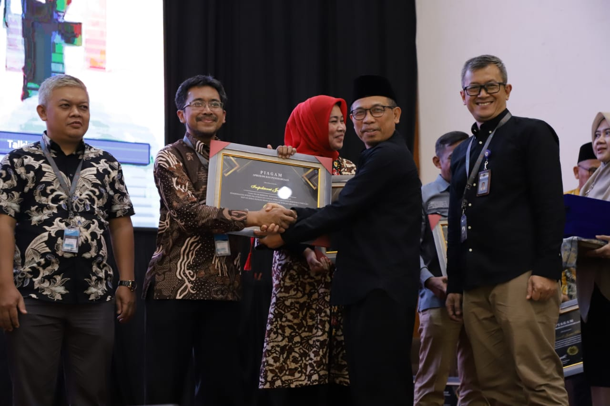

Selamat Datang di Layanan Sertifikasi Halal SELF DICLARE

Kami bangga menjadi mitra Anda dalam mendapatkan sertifikat halal untuk produk Anda secara gratis, dengan dukungan penuh dari pemerintah. Inisiatif ini bertujuan untuk membantu para pelaku usaha, khususnya usaha mikro, kecil, dan menengah (UMKM), dalam memastikan bahwa produk mereka memenuhi standar halal yang diakui secara internasional.
Mengapa Sertifikasi Halal Penting?
Sertifikasi halal memberikan jaminan kepada konsumen bahwa produk yang mereka konsumsi telah memenuhi syariat Islam. Ini tidak hanya penting bagi konsumen Muslim, tetapi juga memberikan kepastian kualitas dan keamanan bagi semua konsumen. Produk yang bersertifikat halal memiliki daya saing lebih tinggi di pasar lokal dan internasional.
Manfaat Sertifikasi Halal Gratis
- Tidak Ada Biaya: Proses sertifikasi halal ini sepenuhnya gratis, berkat dukungan pemerintah. Anda tidak perlu khawatir tentang biaya pendaftaran dan proses lainnya.
- Meningkatkan Kepercayaan Konsumen: Sertifikat halal meningkatkan kepercayaan konsumen terhadap produk Anda, yang pada gilirannya dapat meningkatkan penjualan.
- Akses Pasar Lebih Luas: Produk bersertifikat halal dapat lebih mudah masuk ke pasar yang membutuhkan jaminan halal, baik di dalam negeri maupun internasional.
- Bantuan dan Dukungan: Kami menyediakan bimbingan dan dukungan penuh sepanjang proses sertifikasi, memastikan Anda memahami setiap langkah yang diperlukan.
TENTANG KAMI

Kami adalah penyedia layanan sertifikasi halal self declare yang berkomitmen untuk mendukung para pelaku usaha, khususnya usaha mikro, kecil, dan menengah (UMKM), dalam memperoleh sertifikasi halal dengan mudah dan efisien. Dalam upaya mendukung keberlanjutan bisnis halal, kami menawarkan platform yang memudahkan Anda untuk mendapatkan sertifikat halal tanpa biaya registrasi atau proses lainnya.
MISI
Misi kami adalah memberdayakan UMKM untuk mencapai standar halal internasional dengan menyediakan solusi sertifikasi yang terjangkau dan mudah diakses. Dengan pendekatan self declare, kami memungkinkan pengusaha untuk mengelola dan memantau proses sertifikasi halal secara mandiri, tanpa mengorbankan kualitas atau keakuratan dalam memenuhi persyaratan halal.
-
Akses ke Pasar yang Lebih Luas: Dengan memiliki sertifikasi halal, UMKM dapat memasuki pasar-pasar baru yang membutuhkan produk halal, baik di dalam negeri maupun internasional. Ini membuka peluang untuk meningkatkan volume penjualan dan ekspansi bisnis.
-
Kepercayaan Konsumen: Sertifikasi halal membantu membangun kepercayaan konsumen terhadap produk UMKM. Konsumen Muslim cenderung lebih memilih produk yang memiliki label halal, sehingga sertifikasi ini dapat meningkatkan daya tarik produk dan meningkatkan loyalitas pelanggan.
-
Peningkatan Daya Saing: Produk yang bersertifikasi halal memiliki keunggulan kompetitif di pasar yang semakin global dan beragam. Hal ini membantu UMKM bersaing dengan produk sejenis dari produsen besar atau internasional.
-
Pematuhan Terhadap Standar: Sertifikasi halal mendorong UMKM untuk mematuhi standar produksi dan bahan-bahan yang lebih ketat. Hal ini dapat meningkatkan kualitas produk dan memperbaiki proses produksi secara keseluruhan.
-
Dukungan dari Pemerintah dan Lembaga: Banyak negara dan lembaga pemerintah menyediakan dukungan dan insentif bagi UMKM yang ingin mendapatkan sertifikasi halal. Ini termasuk bantuan dalam proses pendaftaran, pendampingan teknis, dan akses ke program pembiayaan.
-
Pengakuan Internasional: Sertifikasi halal memberikan pengakuan internasional terhadap produk UMKM, memudahkan ekspor ke negara-negara dengan populasi Muslim yang signifikan atau pasar yang membutuhkan produk halal.
-
Peluang Kolaborasi: Melalui proses sertifikasi halal, UMKM dapat membangun jaringan dengan produsen besar, distributor, dan lembaga terkait lainnya. Ini membuka pintu untuk kolaborasi yang menguntungkan dalam pengembangan produk dan ekspansi pasar.
LAYANAN SELF DICLARE
Apa itu Self Declare?
Self Declare adalah pernyataan status halal produk usaha mikro dan kecil oleh pelaku usaha itu sendiri. Self Declare itu sendiri tidak serta merta pelaku usaha dapat menyatakan produknya halal, namun tetap ada mekanisme yang mengaturnya. Self declare wajib memenuhi syarat tertentu, antara lain harus ada pendampingan oleh pendamping Proses Produk Halal (PPH) yang terdaftar serta proses penetapan halal oleh Komisi Fatwa MUI.
Jalur sertifikasi halal dengan Self Declare bagi pelaku usaha mikro dan kecil harus berdasarkan beberapa kriteria yaitu:
- Produk tidak berisiko atau menggunakan bahan yang sudah dipastikan kehalalannya;
- Proses produksi yang dipastikan kehalalannya dan sederhana;
- Memiliki hasil penjualan tahunan (omset) maksimal Rp500.000.000,00 (lima ratus juta rupiah) yang dibuktikan dengan pernyataan mandiri;
- Memiliki Nomor Induk Berusaha (NIB) berbasis RBA;
- Memiliki lokasi, tempat, dan alat proses produk halal (PPH) yang terpisah dengan lokasi, tempat, dan alat proses produk tidak halal;
- Memiliki atau tidak memiliki surat izin edar (P-IRT/MD/UMOT/UKOT), sertifikat laik hygiene sanitasi (SLHS) untuk produk makanan atau minuman dengan daya simpan kurang dari 7 hari atau izin industry lainnya atas produk yang dihasilkan dari dinas/instansi terkait;
- Memiliki outlet dan/atau fasilitas produksi paling banyak 1 (satu) lokasi;
- Secara aktif telah berproduksi 1 (satu) tahun sebelum permohonan sertifikasi halal;
- Produk yang dihasilkan berupa barang (bukan jasa atau usaha restoran, kantin, catering, dan kedai/rumah/warung makan);
- Bahan yang digunakan sudah dipastikan kehalalannya, dibuktikan dengan:
- Sertifikat Halal; atau
- Termasuk dalam daftar bahan sesuai Keputusan Menteri Agama Nomor 1360 Tahun 2021 tentang Bahan yang dikecualikan dari kewajiban bersertifikat halal.
- Tidak menggunakan bahan yang berbahaya;
- Telah diverifikasi kehalalannya oleh pendamping PPH;
- Jenis produk/kelompok produk yang disertifikasi halal tidak mengandung unsur hewan hasil sembelihan, kecuali berasal dari produsen atau rumah potong hewan/rumah potong unggas yang sudah bersertifikat halal;
- Menggunakan peralatan produksi dengan teknologi sederhana atau dilakukan secara manual dan/atau semi otomatis (Usaha rumahan bukan usaha pabrik);
- Proses pengawetan produk yang dihasilkan tidak menggunakan Teknik radiasi, rekayasa genetika, penggunaan ozon (ozonisasi), dan kombinasi beberapa metode pengawetan (teknologi hurdle);
- Melengkapi dokumen pengajuan sertifikasi halal dengan mekanisme pernyataan mandiri secara online melalui sihalal.
Kami memahami pentingnya memiliki sertifikasi halal yang sah dan terpercaya bagi bisnis Anda. Berikut adalah penjelasan lengkap tentang layanan yang kami tawarkan:

Pendaftaran Mudah dan Cepat
Kami menyediakan platform pendaftaran online yang mudah digunakan untuk mempermudah Anda dalam mendaftarkan produk Anda untuk sertifikasi halal. Proses ini dirancang untuk meminimalkan waktu dan upaya yang Anda perlukan.

Konsultasi dan Bimbingan
Tim kami siap memberikan konsultasi dan bimbingan selama seluruh proses sertifikasi. Dari persiapan dokumen hingga audit akhir, kami akan mendampingi Anda untuk memastikan setiap langkah sesuai dengan persyaratan yang berlaku.
.png)
Verifikasi Dokumen
Proses verifikasi dokumen dilakukan secara ketat untuk memastikan kelengkapan dan keabsahan setiap dokumen yang Anda berikan. Ini termasuk pengecekan terhadap bahan baku, proses produksi, dan dokumentasi lainnya yang diperlukan.